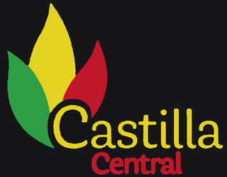
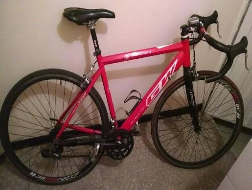

Bicicleta registrada

CUPO BICI1
Torre2
Apartamento504
PropietarioCarlos Pérez Montes
TipoRuta
MarcaGW
ColorRojo
N.º de serieGW23R0418576
Vigencia del registro31/12/2027
Esta bicicleta está registrada en la administración del Conjunto Castilla Central para el cupo asignado.
Ficha de ejemplo: foto ilustrativa y datos ficticios.